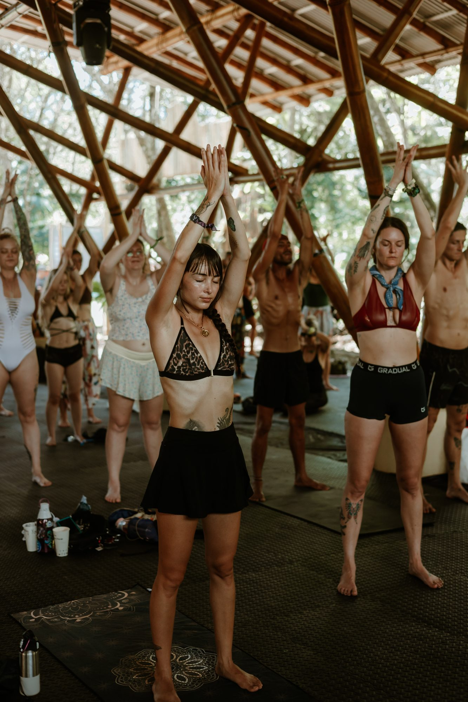
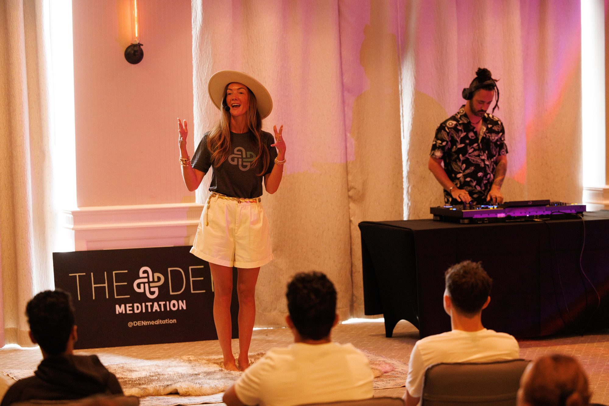
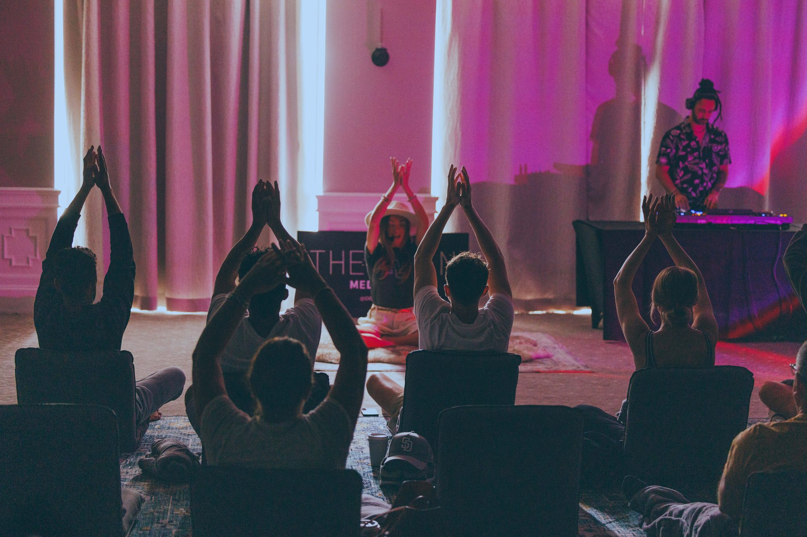
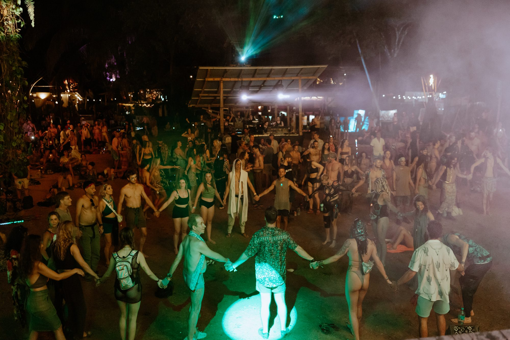
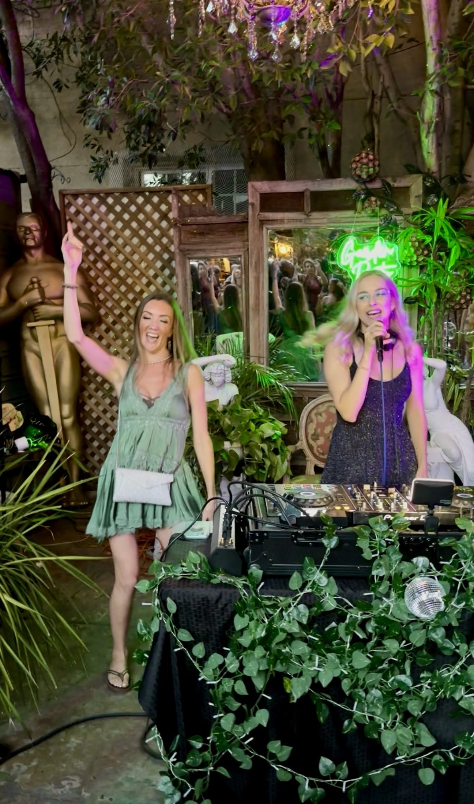
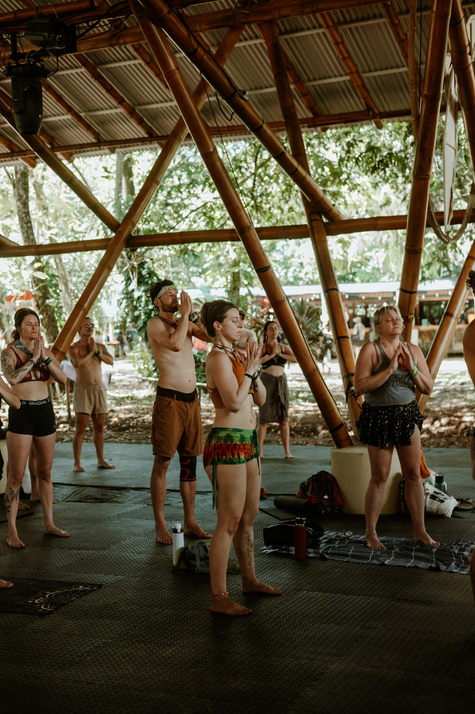
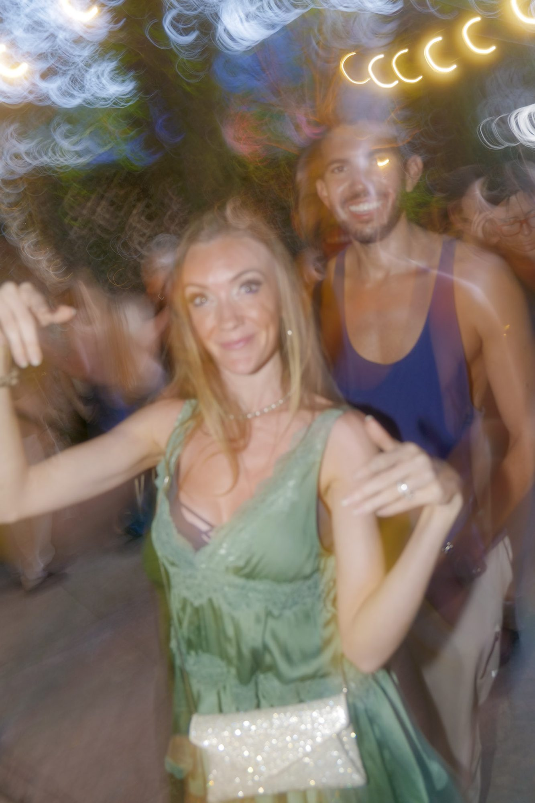
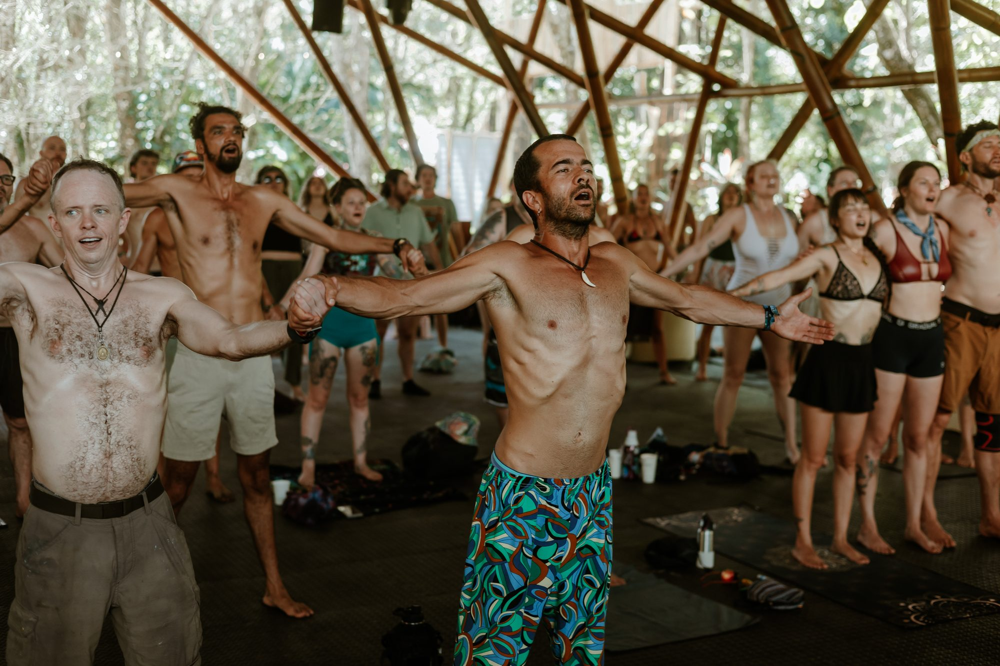
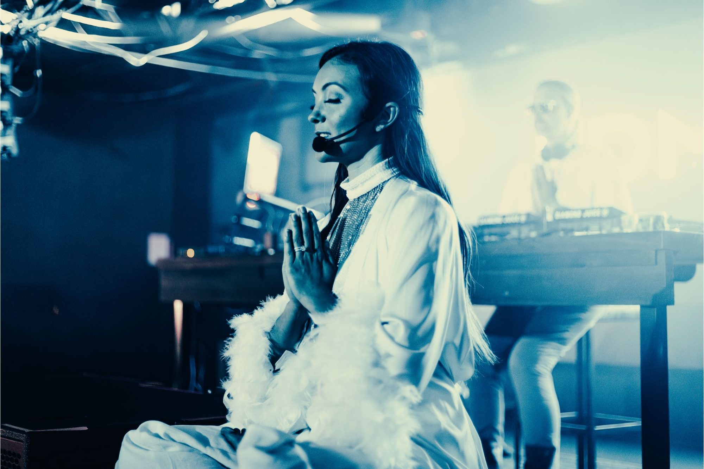

Breathe to the Beat.
Meditate to the Music.
Dance in Awareness.
EDM Breathwork® is a new way of experiencing mindfulness — not in silence, not removed from the world, but right in the middle of the music, movement & community you already love. The music doesn't stop. You drop in.
Millions of people already gather around music — festivals, concerts, clubs, hotels, retreats, pool parties. Already dancing. Already opening themselves to rhythm and connection. The infrastructure already exists.
Our mission is to bring accessible mindfulness directly into music culture — guided breathwork and meditation that lives naturally inside the rhythm of the event. Not removing people from the experience. Deepening it.

The music continues. A guided voice comes through the sound system. The crowd notices its breath. We activate, we regulate, we meditate to the music — then the next chapter begins. Nothing had to stop. The transition itself became the practice.

Notice your breath while the music is playing.
Notice your body. Notice your thoughts.
Notice the people around you. Notice this moment.
The goal isn't to escape the festival — it's to actually be there for it.
EDM Breathwork® is rooted in pranayama — the yogic practice of consciously working with the breath. Modern physiology gives us another lens on that same relationship: breathing interacts with cardiovascular activity, autonomic regulation, and brain-body signaling, and different breathing patterns can create different physiological experiences.
That's why the practice is intentionally structured as a journey, not a single technique.
We don't use one breath for everything — we move through different patterns for different moments of the experience.
Activating breath patterns create temporary shifts in arousal, sensation, and physiology — intentional physiological challenges. Activation isn't the enemy: music, exercise, excitement, and love all activate us. The goal isn't avoiding intensity — it's staying connected to yourself inside of it.
The rhythm slows, the breath softens, attention deepens. Slower-paced breathing has been studied for its effects on autonomic and cardiovascular processes, including heart-rate variability. In simple language: we practice shifting gears, from intensity toward steadiness.
Breath becomes rhythmic, attention becomes focused, the body settles from activation. We use "coherence" to describe a felt experience of greater internal organization — not a claim of some perfect measurable state, but a practiced relationship between breath, heartbeat, and awareness.
The music rises, the dancing continues — but now you know where your breath is, and how to return to it. The meditation continues while you dance. The practice isn't complete until you can take it with you.
We Don't Train Permanent Calm. We Train the Return.
Never get stressed.
Never get overwhelmed.
Never become activated.
Never experience intensity.
Know where your breath is.
Know how to notice.
Know how to create space.
Know how to come back.
A skill you can carry into every area of your life. The dance floor just happens to be one of the most fun places to practice it.
A festival is already an incredibly stimulating environment — bass, lights, crowds, emotion, anticipation. Instead of believing mindfulness only happens by removing ourselves from stimulation, we ask a different question: can we become conscious inside of it?
You don't have to stop having fun to become conscious. You don't have to sit still to notice your breath. This is meditation designed for real life — messy, moving, loud, beautiful, alive.



Transformation can be fun. Mindfulness can be joyful. We don't practice so we can escape our lives — we practice so we can experience more of them.
Joy matters.
Connection matters.
Community matters.
Play matters.
Music matters.
Movement matters.
Breath matters.
Not spirituality as seriousness. Not mindfulness as another item on your self-improvement checklist — a practice you actually want to do.
The festival stops being somewhere you disappear. It becomes somewhere you arrive. From Escape to Connection
The stages exist. The sound systems exist. The audiences exist. What if the infrastructure built to entertain people could also introduce them to tools for self-awareness?
What if someone attends for the music & accidentally discovers their breath?
What if someone who'd never attend a meditation class experiences mindfulness beside their best friends?
What if a three-minute practice becomes something they remember the next time life gets overwhelming?
When I feel overwhelmed, I can notice my breath.
When my thoughts begin spiraling, I can witness them.
When I disconnect from my body, I can return.
When I experience intensity, I can move through it.
When I'm surrounded by thousands of people, I can still feel myself.
When life becomes incredibly beautiful, I can be present enough to receive it.
That is how we begin creating the new earth. One breath at a time.



Festival programming, DJ transitions, opening ceremonies, sunset experiences, VIP moments, brand activations. The music continues — the breath becomes another layer of the experience.
Hotels, resorts, retreats, wellness clubs, corporate events, fitness communities, conferences — anywhere music, people, and transformation meet.
The DJ creates the emotional architecture through sound; the facilitator guides attention, breath, and awareness through it. Together, music becomes an intentional experience. We breathe to your beat.

Maybe you've never meditated. Maybe "wellness practice" makes you want to run. Maybe you came for the DJ. For the next few moments — notice your feet, feel your body, hear the music, find the rhythm, notice your breath.
You are here.
The beat gives us structure. The breath gives us awareness. The body gives us information. Music brings us together, and presence lets us actually experience it.
Meditation doesn't belong exclusively in silence. Follow the sound, follow the rhythm. Notice when your mind wanders. Come back — again, and again.
Can you remain connected to yourself while moving? Can you experience joy without unconsciously racing through it? Don't leave your body to experience your life — come deeper into it.
We see trained facilitators bringing this into their communities.
We see DJs collaborating with breathwork practitioners.
We see hotels & resorts creating music-driven wellness programming.
We see wellness becoming more joyful, accessible & social.
We see a world where nobody thinks it's strange to take a collective breath before the next beat drops.
Help People Remember That They Can Return to Themselves. Again & Again.